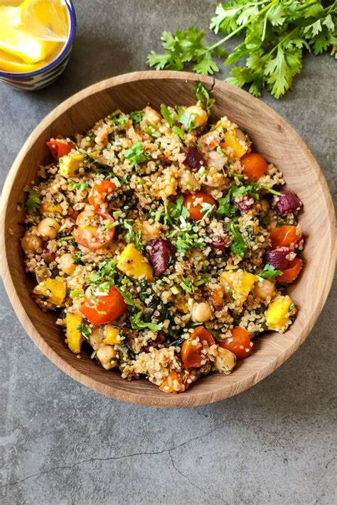

Quinoa Bowl
These bowls are made with quinoa, vegetables, and a protein of your choice. They're a healthy and delicious meal option.
Ingredients
- 1 cup quinoa
- 1/2 cup water
- 1/2 cup vegetable broth
- 1/2 onion, chopped
- 1 carrot, chopped
- 1 celery stalk, chopped
- 1 (15 ounce) can black beans, rinsed and drained
- 1 (15 ounce) can corn, drained
- 1/2 cup chopped fresh cilantro
- 1/4 cup lime juice
- 1/4 teaspoon salt
- 1/4 teaspoon black pepper
Instructions
- In a medium saucepan, combine the quinoa, water, and vegetable broth.
- Bring to a boil, then reduce heat to low and simmer for 15 minutes, or until the quinoa is cooked through.
- While the quinoa is cooking, heat a large skillet over medium heat.
- Add the onion, carrot, and celery to the skillet and cook until softened, about 5 minutes.
- Add the black beans, corn, cilantro, lime juice, salt, and pepper to the skillet and cook for 2 minutes, or until heated through.
- To assemble the bowls, divide the quinoa evenly among 4 bowls.
- Top with the vegetable mixture and serve immediately.
Enjoy!